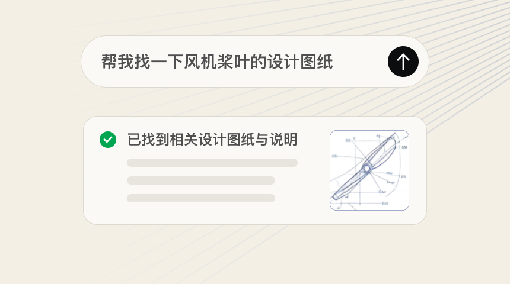
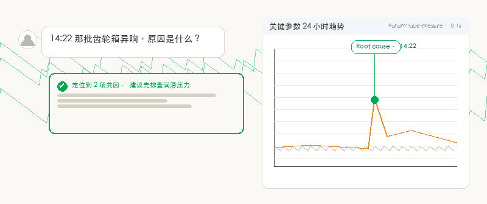
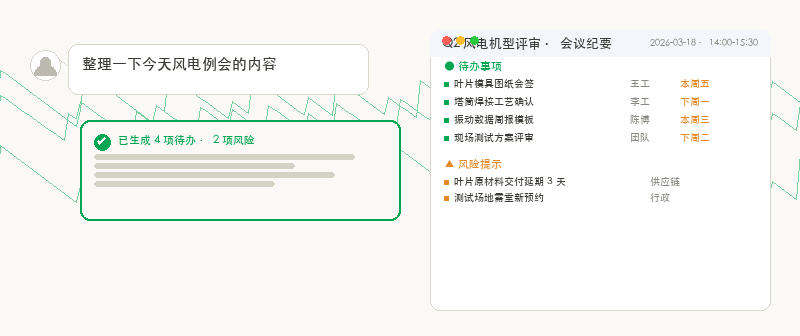
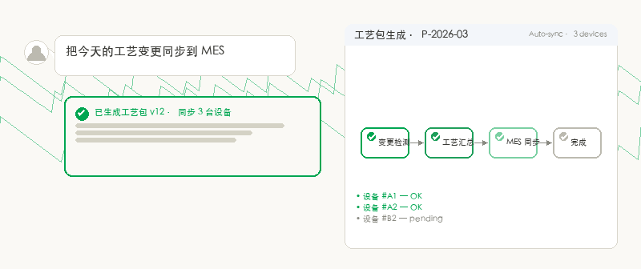
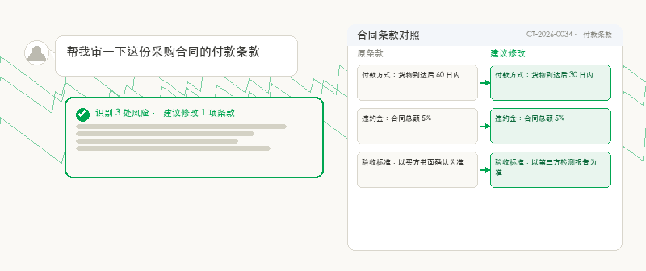
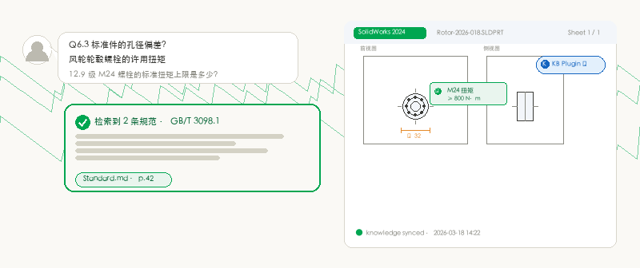

从问答检索、质量追因到会议纪要、合同审核——每位智能体各司其职，开箱即用。告诉它要做什么，剩下由它完成。

基于企业知识库的智能问答助手。回答有出处，引用有页码，问错会自动反问澄清。

质量问题分析与根因追溯。输入异常现象，自动在工单、检测、参数曲线里找共因。

会议纪要、议题梳理与待办跟踪。会上专心讨论，会后结构化交付。

工艺技术准备 API 集成入口。自动汇总变更、生成工艺包、同步到 MES。

合同文件智能审核与风险识别。条款对照、风险标注、修改建议一站完成。

集成于 SolidWorks / Siemens NX 环境的智能问答插件，调用知识库解答设计规范、材料特性、标准件参数等问题。
根据制造业和日常办公场景，为您推荐精选最佳实践技能，在这里您也可直接创建并管理自己的技能。